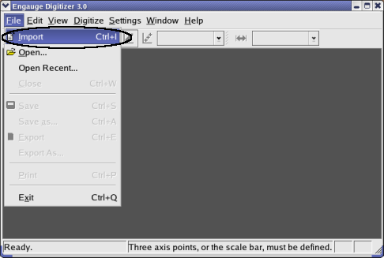
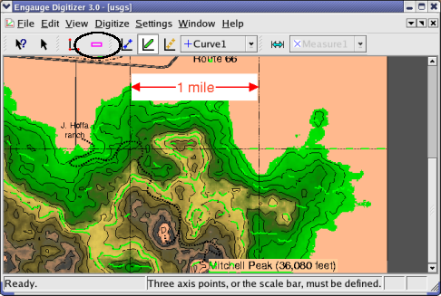
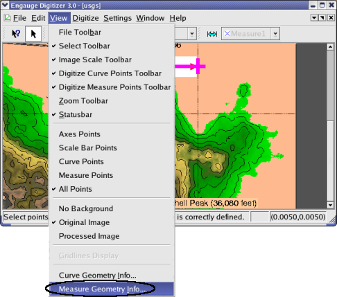

Engauge Digitizer - Manual Map Tutorial
Engauge Digitizer - Manual Map Tutorial
Manually Digitizing A Map Image
The following steps manually digitize a map with
a scale bar.
- Import the map.png case from the Samples directory, using
File/Import as shown. Not shown are the other methods of importing:
using the "-import" command line option,
by copying and pasting, and by dragging and dropping

- Click on the Scale Bar button to enter the scale bar. This will
define the coordinate system

- Click on one end of the scale bar in the image.

- Drag to the other end of the scale bar in the image.

- Enter the length of the scale bar in graph coordinates

- Click on the Curve Points button before entering curve points. These
will contain the digitized graph data

- Click on the curve to add a curve point. Repeat until all of the
points in the original image are digitized.